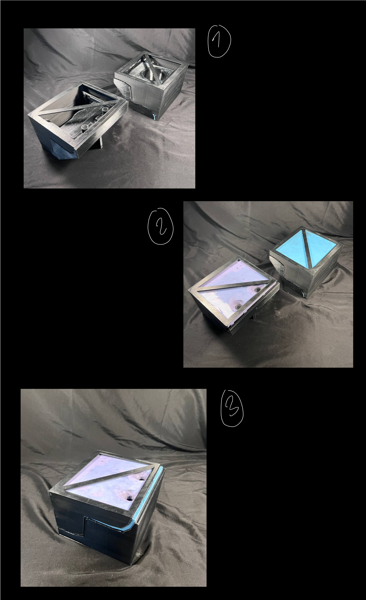

A08: PlanTV!
For the final deliverable of this class, I am focusing in creating a small TV that could run different photos and animations, sitting somewhere around my desk. It will include a planter at the top as well. It will be powered by a Raspberry Pi.

-- EXPECTATIONS --
The schedule for this assignemnt was amp. However, not everything runs as smoothly. The biggest challenge was learning and scheduling CNC work at the Mill or the 8 (the makerspaces part of UW.) Material procurement was also a difficult task, certain products were not available or came damaged, such as Oomo rubber, which I couldn't find in its non-solidifed form.
. .
-- REALITY --
-- DESIGN ITERATIONS --
The first step consisted in iterating different design in Rhinoceros. The proportions and main idea was solid from iteration, but the curvature, the smoothness, and the direction of the legs had to be taken into account.
Making the decision of adding the legs required understanding the challenges associated with cutting them or milling them. For instance, they had to be vertical at the edges, otherwise, not even double-sided CNC would be able to reach some of the areas in them.

-- FINAL PROTOTYPE --
For the final prototype, I kept the legs, but I ensured they are easy to cuit by avoiding double curvature where a cnc machine would not be able to reach. The final iteration (not here) has rounded edges, but very similar to this one:

-- DEFINING ALL THE PARTS OF THE MODEL --
Creating the final design iteration was not just modeling, but I had to consider the thickness and size of every single piece that would be part of the planter. Accounting for the raspberry pi proved to be a bigger challenge than I thought, especially when considering the thickness of the screen and how to attach the system to the casing. Adding a planter meant that the raspberry pi area and the planter would not touch at any moment.
-- PART 1: CEMENT TOP --
The top part uses cement with deep black oxyde dye. I used a two part Oomo mold, that required very big 3D printed molds, easier to undersand with the diagram below.
The trick was ensuring that the USB ports for the cement casing where still opened, while allowing the piece to come out of the Oomo without breaking. I couldnt accomplish this, It ended up being better to not create the opening entirely, but to leave a very samll membrane and brake it after the fact.

-- 3D PRINT SCALE REFERENCE! --
These were very big 3D prints.

-- A KIT OF PARTS --
Here are the real representation of the 3 steps.

-- OOMOS --
-- 
-- POURING THE CEMENT --
Working with oxide was a big mess. The powder gets everywhere and has very strong coloring effects. I used a 90% cement, 10% dye ratio, which guarantees the strongest black while maintaining the cement structural integrity.

-- ATTEMPTING TO VIBRATE THE CEMENT --
This is a technique I often see used in concrete sidewalks. I created a vibrating tool by encapsulating my iphone with a ziploc bag. I cant say I saw a lot of bubbles coming out.
-- HARDENED IN 4 MINUTES --
Unfortunately, I took 3 to 4 minutes making sure there would be no bubbles in the blend while pouring it, and it hardened rather quickly. I was not able to continue pouring after a few minutes.

Unfortunately, I dont have a photo of the final shape. The trick was to blend the cement + oxide very well AHEAD of the water. Then stirr as quick as possible, under 2 minutes to be exact, before pouring into the mold, again, as fast as possible.
Shaking and rotating the mold vigorously a few times during pouring can help avoid the largest bubbles.
-- PART 2: ELECTRONICS!
After having the cement top, it was time to add the electronics. While initially I wanted to create a door or opening where I could change the electronics in the future if needed. I realized this system was very complex due to two factors: 1. Being a planter and requiring it to be protected from water and the environment, and 2. the cement to wood adhesion that requires a strong bond with a good surface area.

After assembling the Raspberry Pi with the 5" LCD display, I printed a screen edge.

This is the final look. Quite neat thanks to the raspberry pi being attached directly to the display. 
-- PART 3: WALNUT Base! --
Now that the cement top and the raspberry pi were in place, we just needed to wrap up the planter with the base. In this case, I had a 8"x2" piece of Walnut. This required me to mill the piece in 2 separate pieces. This also made it slightly more error-prone in case one of them broke.
 - Rhinoceros 7 Commercial - [Perspe.jpg)
-- GETTING INTO CAM --
In order to CNC I had to learn how to work with the CAM software that would process the GCode needed. The machine to be used would be a Shopbot.
I utilized Aspire v10.5, the one available at The 8 Makerspace. It was difficult since nobody around it knew how to use it. But with a bit of tutoring from Prof. Nadya and this software's ability to simulate how it would be cut, I was generally in safe territory by the time we were cutting things.

-- DOUBLE CURVATURE AND OPENINGS REQUIRED DOUBLE SIDED CNC CUTS --
The biggest challenge in this model was that each side of the walnut required milling. My model was symmetrical, which enabled the board to simply be flipped horizontally. The method for aligning both boards was done through indexing four symmetrical 1/2" dowels in each corner of the wood. These holes are also cut through the Shopbot board, that way, when you flip your material, you can use the dowels to align the openings on the walnut and the shopbot board. This diagram illustrates better the intention:

The smoothing and perfection of subtractive manufacturing makes it feel more magical than 3D printing or laser cutting. There is something artistic about carving into a material and getting a perfectly sized piece.

Here is a showcase of the indexing after cutting the first side. The Shopbot cut four corners of the walnut, then we replicated the same cuts in the throwaway board. Then we flip the walnut and align both with the dowels. It was a perfect alignment when cutting.

IT BROKE!
Unfortunately, the legs were too thin and elongated for the speed and sizes we picked (1/4" End Mill for roughing + 1/8" Ball Nose for finishing) - Cut files at the bottom for reference.
Luckily I was able to find the broken pieces below the board! I was able to glue them and sand the rough edges by hand.

-- MORE BROKEN PIECES --
After succesfully cutting the wood. I joined it with the cement casing using Epoxy glue. In order to smooth the edges and make both pieces look as part of the same mold. I sanded each side until there was no visible bump between both materials.
Sadly, when attempting to vacum all the black dust from the sanding machine, I dropped the piece to the ground.
I attempted to fix the situation by pouring some extra cement in those areas.

-- SANDING AWAY --
Then I spent 3-4 hours sanding away all the extra material to return to its original shape.
-- FINAL-LY! --
After all that, I was finally able to put together my final project. I am very happy with the results, I no longer think that scenery is the best option for this. I believe I will stick to black backgrounds and very minimal utility apps (such as calendar, reminders, dates.)
This is the setup I used to document most of my projects. This is the final project of the class, but I believe I will continue digitally fabricating more things! Next quarter I am taking Physical Computing, and I believe the learnings of this class will match perfectly. I am very happy with everything accomplished and I am very thankful for Prof Nadya and our TA Junchao.

Source File (1 Combined)
A08_ModelFiles.3DM